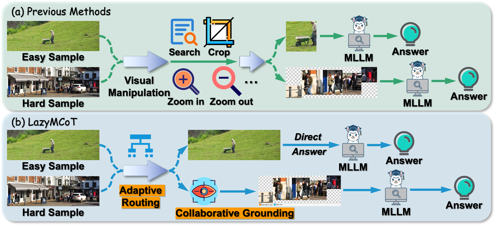
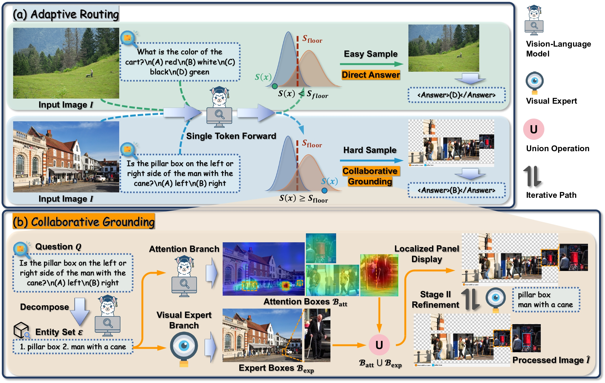
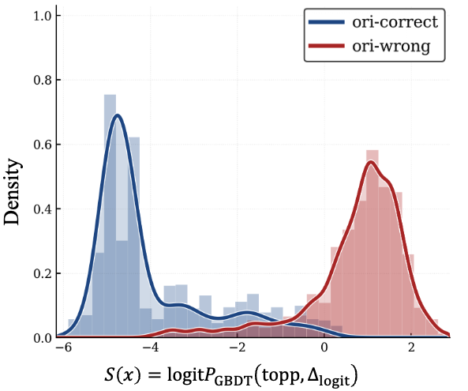
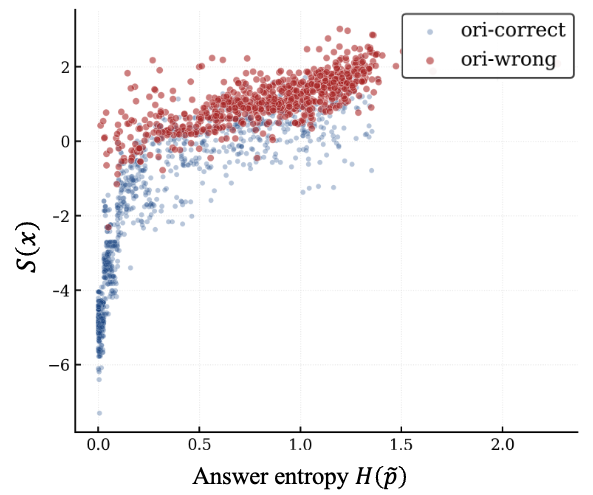

🔍 Qualitative Results

Figure 6. Case studies of Collaborative Grounding on hard samples: the Localized Panel Display recovers small or occluded targets for accurate re-querying.
While Multimodal Large Language Models (MLLMs) excel in cross-modal reasoning, they often struggle to perceive fine-grained details in complex high-resolution images. Recent training-free methods address this through image scaling and localized cropping. However, applying these manipulations indiscriminately introduces computational redundancy for simple queries and can degrade accuracy by truncating essential global context or introducing irrelevant background noise.
To this end, we propose LazyMCoT, a dynamic and training-free framework that adaptively allocates visual grounding effort based on sample difficulty. The framework features an Adaptive Routing mechanism that evaluates predictive uncertainty using first-token statistics from a single forward pass, efficiently bypassing confident cases while ensuring the recall of difficult samples via conformal calibration. For these challenging cases, a Collaborative Grounding module integrates the inherent cross-modal attention of the model with an external visual expert through a two-stage refinement process, generating a precise localized display to recover small or occluded targets.
🎯 Key Results: Extensive experiments across diverse benchmarks demonstrate that LazyMCoT rivals training-based approaches by simultaneously improving reasoning accuracy and reducing average inference latency.
A lightweight difficulty-aware router decides whether visual grounding is needed using only zero-cost first-token statistics, with a conformal-calibrated threshold that guarantees a controllable recall of hard samples.
Couples the VLM's cross-modal attention with an external visual expert through a two-stage refinement, producing a precise Localized Panel Display for re-querying.
Works out of the box on multiple VLM backbones (Qwen2.5-VL, Qwen3-VL, InternVL3) without any fine-tuning.
Confident queries skip the heavy grounding pipeline entirely, reducing average latency while preserving and often improving accuracy.

Figure 1. LazyMCoT allocates visual grounding effort by sample difficulty. Previous training-free methods indiscriminately apply heavy visual manipulation to every sample, whereas LazyMCoT routes easy samples to a direct answer and dispatches only hard samples through Collaborative Grounding before re-querying the MLLM.

Figure 2. Overview of LazyMCoT. The Adaptive Router uses first-token statistics to decide whether to answer directly or invoke Collaborative Grounding, which fuses attention-driven evidence with an external visual expert to render a Localized Panel Display for re-querying.


Figure 3. Zero-cost first-token features (option top-probability and option-vs-non-option logit gap) exhibit a strong monotonic correlation with predictive entropy, cleanly separating directly solvable samples from those that genuinely require dense visual grounding.
Figure 6. Case studies of Collaborative Grounding on hard samples: the Localized Panel Display recovers small or occluded targets for accurate re-querying.
@misc{wang2026focusnecessaryadaptiverouting,
title={Focus When Necessary: Adaptive Routing and Collaborative Grounding for Training-Free Visual Grounding},
author={Yifan Wang and Peiming Li and Shiyu Li and Zhiyuan Hu and Xiaochen Yang and Wenming Yang and Yang Tang and Zheng Wei},
year={2026},
eprint={2606.16158},
archivePrefix={arXiv},
primaryClass={cs.CV},
url={https://arxiv.org/abs/2606.16158},
}